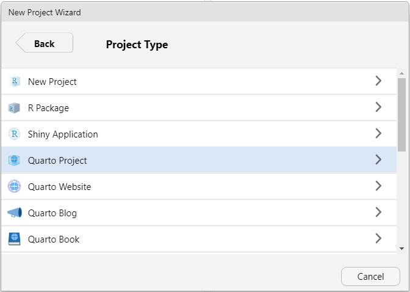
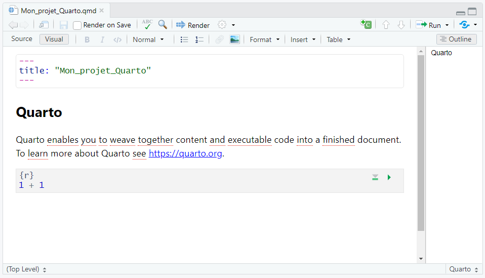
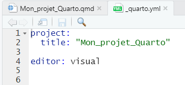
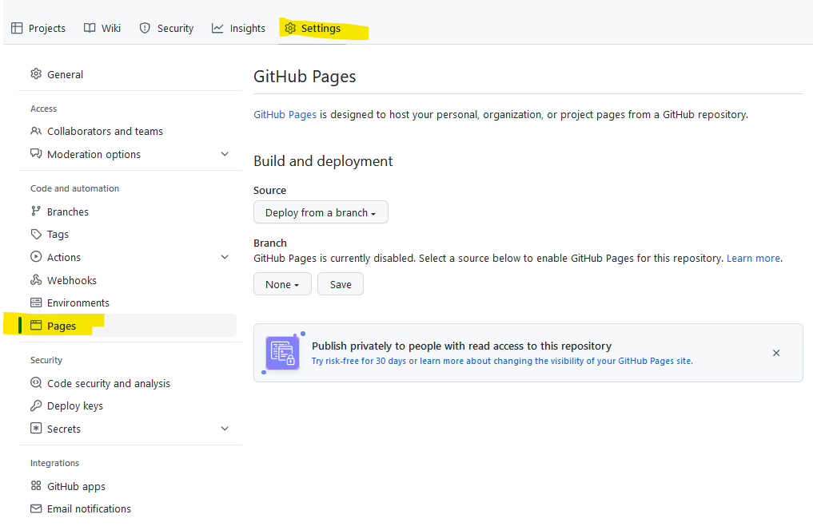
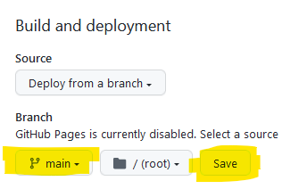

git remote add origin git@github.com:EE-CIST/mon_depot_github.git
git branch -M main
git add .
git commit -m "initial"
git push origin mainQuarto & Git
Mon document (notebook, site web) en intégration continue
1 Créer un Quarto (avec Rstudio)
1.1 Plusieurs formats
- Document (article, diaporama…)
- Website
- Book
Mais cela fonctionne de la même façon…



1.2 Fichiers générés
Quarto document


Métadonnées de l’en-tête du dosument Quarto :
https://quarto.org/docs/output-formats/html-basics.html
exemple :


Métadonnées générales :
https://quarto.org/docs/projects/quarto-projects.html#project-metadata
Quarto book
Quarto Website
1.3 Index.qmd
Afin de faciliter le déploiement du fichier (cf. partie 3), renommez le fichier.qmd en “index.qmd”
1.4 Compiler le document


2 Stockage sur Github
Support d’atelier explicite et efficace : https://sigr2021.github.io/git/#
2.1 Installer Git
2.2 Inscription GitHub
2.3 Clefs SSH
2.4 Créer un dépôt
https://sigr2021.github.io/git/#22

2.5 Pusher son projet
Il ne reste plus qu’a ajouter son projet Rstudio sur le nouveau dépôt créé.

En ligne de commande
Dans le terminal proposé par Rstudio :
3 Déployer son document





3.1 Netlify
4 Intégration continue
4.1 Pull
Récupérer les dernières modifications et/ou ajouts :
git pull4.2 Add
Ajout des fichiers à prendre en compte :
git add .
# Ou
git add nomfichier.xxx4.3 Commit
“Archivage” des modifications locales, avant l’envoi sur le dépôt :
git commit -m "name of the commit"4.4 Push
Envoi, ajout des modifications sur le dépôt :
git push